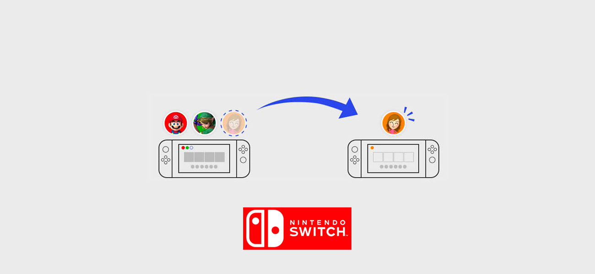
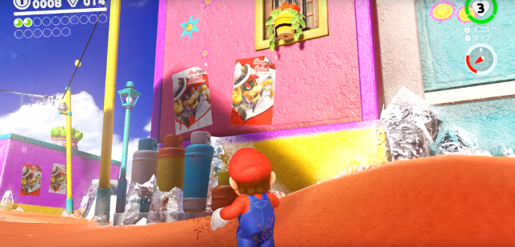

A 30 años del lanzamiento del NES Classic
Por: James Smith
¿Por qué ese regreso al pasado por parte de las compañías de videojuegos? Si las consolas de última generación han significado la evolución en todos los aspectos posibles
30 Millones de consolas vendidas hasta 1990
13 Juegos que superaron el millón de copias vendidas
32 Años después se lanza su versión mini
La era digital está llena de paradojas: por un lado, atestiguamos la creación de máquinas potentes y diminutas que facilitan las labores cotidianas como los teléfonos inteligentes. Pero por otro lado vivimos añorando aquellos dispositivos que sólo necesitaban de dos o tres botones para hacernos pasar un buen rato de diversión.
El videojugador no se salva de ese deseo de traer de vuelta lo antiguo. Si bien las consolas de videojuegos estuvieron presentes desde la década de los setenta. Fue hasta mediados de los ochenta que alcanzaron popularidad entre la clase media norteamericana, y unos años después en la mexicana.
Pero, ¿por qué ese regreso al pasado si las consolas de última generación han significado la evolución en todos los aspectos posibles? Como el diseño, potencia de gráficos, interacción y plena integración con otros servicios de Internet.
Los psicólogos lo podrían explicar a partir de la añoranza por cómo se era la vida en los años en los que los videojugadores tuvieron sus primeras consolas. Los sentimientos que tenían, sus gustos y hasta momentos familiares relacionados estrechamente con los videojuegos como punto de reunión.
Una carrera hacia el pasado
La era digital está llena de paradojas: por un lado, atestiguamos la creación de máquinas potentes y diminutas que facilitan las labores cotidianas como los teléfonos inteligentes. Pero por otro lado vivimos añorando aquellos dispositivos que sólo necesitaban de dos o tres botones para hacernos pasar un buen rato de diversión.
El videojugador no se salva de ese deseo de traer de vuelta lo antiguo. Si bien las consolas de videojuegos estuvieron presentes desde la década de los setenta. Fue hasta mediados de los ochenta que alcanzaron popularidad entre la clase media norteamericana, y unos años después en la mexicana.
Pero, ¿por qué ese regreso al pasado si las consolas de última generación han significado la evolución en todos los aspectos posibles? Como el diseño, potencia de gráficos, interacción y plena integración con otros servicios de Internet.
Los psicólogos lo podrían explicar a partir de la añoranza por cómo se era la vida en los años en los que los videojugadores tuvieron sus primeras consolas. Los sentimientos que tenían, sus gustos y hasta momentos familiares relacionados estrechamente con los videojuegos como punto de reunión.
Los psicólogos lo podrían explicar a partir de la añoranza por cómo se era la vida en los años en los que los videojugadores tuvieron sus primeras consolas. 
El videojugador no se salva de ese deseo de traer de vuelta lo antiguo. Si bien las consolas de videojuegos estuvieron presentes desde la década de los setenta. Fue hasta mediados de los ochenta que alcanzaron popularidad entre la clase media norteamericana, y unos años después en la mexicana.
Pero, ¿por qué ese regreso al pasado si las consolas de última generación han significado la evolución en todos los aspectos posibles? Como el diseño, potencia de gráficos, interacción y plena integración con otros servicios de Internet.
Los psicólogos lo podrían explicar a partir de la añoranza por cómo se era la vida en los años en los que los videojugadores tuvieron sus primeras consolas. Los sentimientos que tenían, sus gustos y hasta momentos familiares relacionados estrechamente con los videojuegos como punto de reunión.